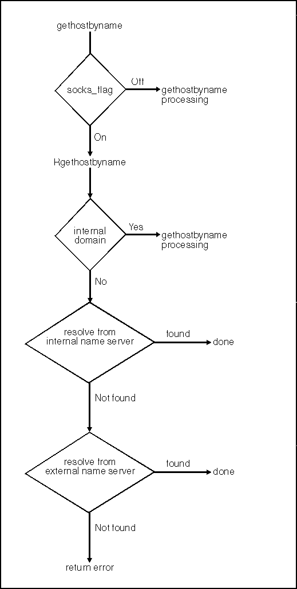
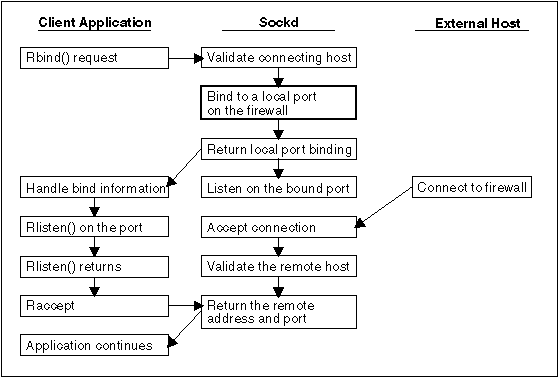

The SOCKS library calls establish connections to sockd on the firewall and transmit information. The sockd daemon performs the operation as if it were originating the request. Any data sockd receives from the external connection is then passed on to the original requestor. To the internal host everything appears as usual, but to the external host sockd appears to be the originator of the communication.
The SOCKS library routines pass all network connections to sockd, which is running on the firewall. The functions that are provided are designated by the letter R preceding the name of the regular C library socket calls that they are replacing. The SOCKS routines take the same parameters as the original functions, with the exception of Rbind(). Rbind() has an additional parameter: the address of the remote host from which the connection is established.
The following routines are supported:
Routine
See the information for the regular calls in Protocol-Independent C Sockets API.
The following figure shows how a gethostbyname() call works. gethostbyname

The following figure shows how an Rbind() request works.
Rbind() Request
